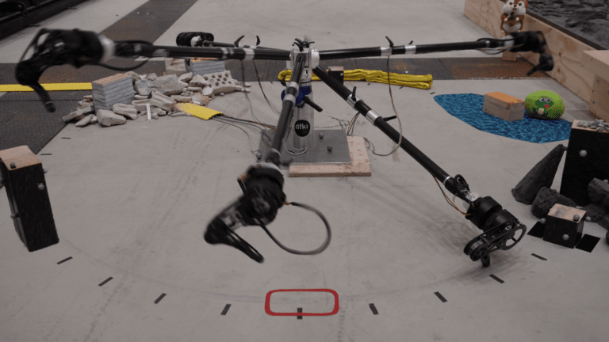

Model Predictive Parkour Control of a Monoped Hopper in Dynamically Changing Environments

Legged robots excel at navigating challenging and obstructed terrain, requiring dynamic and precise control. This paper introduces a novel model predictive parkour controller that computes optimal paths in real-time through changing obstacle courses using mixed-integer motion planning. Execution is achieved via a robust state machine with PD control and feedforward torques, enabling accurate and reliable movement.